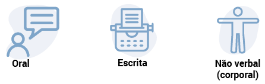
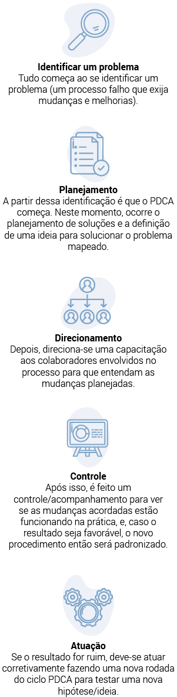

“Você é o que compartilha, a forma como se comunica com o mundo.”
Michelle Silva
A palavra “comunicação” vem do latim “communicare”, que significa “tornar comum”. A comunicação assertiva é uma das principais competências de um profissional de sucesso, pois é preciso falar e escrever com objetividade e clareza a ideia ou a proposta que está sendo comunicada.
Assim, a comunicação acontece por meio das formas:
 Os meios de comunicação social mais conhecidos, utilizados para adquirir informação, são:
Agora também existem as redes sociais, que transmitem conteúdos e notícias com o objetivo de promover a interação com os usuários.
Profissional de sucesso é aquele que sabe fazer os pedidos corretos e as perguntas certas, além de conseguir consolidar os dados e as informações externos de acordo com as demandas da respectiva área de atuação.
Logo, para uma comunicação ser clara e eficaz, antes o emissor precisa transmitir uma mensagem clara e objetiva, de forma que não ocorram “ruídos”, ou seja, não ocorra uma interpretação equivocada por parte da pessoa que está recebendo a informação (receptor). Ser assertivo oferece uma melhor chance de entregar a mensagem com sucesso. A comunicação assertiva, assim, é uma das principais habilidades dos profissionais de sucesso.

Como a assertividade se baseia no respeito mútuo, ela consiste em um estilo de comunicação eficaz e empático. Falar com assertividade mostra respeito e disposição para defender interesses e expressar pensamentos e sentimentos. Também demonstra consciência dos direitos alheios e esforço para trabalhar na resolução de conflitos.
Ainda, comportar-se assertivamente pode ajudar em vários aspectos. Veja agora alguns deles:
Agora também existem as redes sociais, que transmitem conteúdos e notícias com o objetivo de promover a interação com os usuários.
O feedback é uma forma de comunicação realizada para transmitir a avaliação referente aos resultados obtidos em determinada atividade. É um retorno construtivo sobre o desempenho de um profissional, o que geralmente ocorre nas empresas quando o objetivo é desenvolver os funcionários, visando a melhorar cada vez mais a produtividade das equipes. Basicamente, trata-se de um retorno sobre o desempenho, a conduta e os resultados do profissional.
As estratégias de comunicação direcionam a como chamar a atenção de determinado público-alvo, seja cliente interno (colaborador), seja cliente externo (consumidor).
A comunicação corporativa atua no processo de gestão comunicacional e de gestão do relacionamento da empresa, utilizando os mais diferentes canais e meios de comunicação. Também trabalha para manter a reputação (imagem positiva) da empresa com relação ao público externo e promove ações de engajamento para os colaboradores.
É na interpretação do outro sobre o que foi dito ou escrito que o objetivo da interação se confirma (ou não).
Por meio dos canais de comunicação com o cliente, podem-se receber demandas e solicitações, as quais permitem iniciar um relacionamento com o objetivo de conectar a marca da empresa com o público externo.
Os tipos de canais mais utilizados são:
Os canais de atendimento ao cliente geralmente são definidos com base nas estratégias estabelecidas no planejamento de comunicação e marketing das organizações.
Com o surgimento de novas plataformas e novos canais de comunicação, por vezes as pessoas esquecem como escrever de forma assertiva, ou seja, esquecem como expor as ideias clara e corretamente (de acordo com as normas ortográficas). Então, quando o indivíduo entra no mundo corporativo, acaba sentindo dificuldade no momento em que precisa redigir um e-mail ao colega de trabalho, por exemplo, ou um comunicado ao cliente externo.
Por causa da situação ocasionada pela pandemia da Covid-19 (coronavirus disease), muitas empresas adotaram a prática do trabalho remoto, o que fez com que as pessoas percebessem a importância de uma comunicação assíncrona assertiva. Na cultura remota sólida, a escrita é altamente valorizada.
Tendo em vista tal necessidade, é cada vez mais reforçada a ideia de que comunicar envolve técnicas de comunicação com o uso de uma linguagem simples, fácil e objetiva, utilizando palavras de fácil entendimento, sem se esquecer de conjugar os verbos e prestar atenção à ortografia e aos pronomes de tratamento.
Veja a seguir alguns itens básicos no processo de escrita de e-mails:
Informe na mensagem exatamente o que você quer. O ideal é que o texto contenha no máximo dois parágrafos de até quatro linhas.
Faça uma checklist das informações que precisam ser transmitidas sobre determinado assunto.
Limitar o assunto do e-mail faz com que a mensagem se refira somente a um determinado tema, evitando textos confusos e cansativos.
A formalidade denota profissionalismo, segurança e integridade. Comece o texto com pronomes de tratamento como: “Prezado”; “Prezada”; “Senhor”; “Senhora”; “Senhorita”.
Utilize termos ou frases para finalizar seu e-mail, tais como: “Atenciosamente”; “Agradeço a atenção”; “Até a próxima”; “Com os melhores cumprimentos”; “Cordialmente”; Desde já, muito obrigado(a)”; “Grato(a)”.
Veja a seguir alguns exemplos de e-mails que você, como futuro contabilista, pode utilizar no dia a dia profissional.
Boas-vindas ao cliente
O objetivo é estabelecer o primeiro contato com o cliente após ele contratar os serviços da empresa:
Modelo de e-mail de boas-vindasSolicitação de documentos contábeis
O conteúdo do e-mail pode ser alterado de acordo com os documentos que se enquadram na necessidade do cliente. Portanto, mesmo existindo um modelo de carta padrão, o ideal é ter o hábito de verificar as informações de acordo com cada solicitação.
Modelo de e-mail de solicitação de documentosSer assertivo significa oferecer a melhor chance de entregar a mensagem com sucesso. A comunicação assertiva é, assim, uma das principais habilidades dos profissionais de sucesso.
Logo, fique atento à forma como você se comunica, principalmente considerando o atual cenário. Atualmente, não basta ter os melhores resultados; o profissional precisa saber comunicá-los com eficácia e utilizando um item essencial: a empatia.